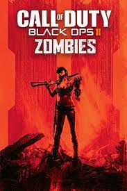

A história de toda a saga zombies durante Black Ops 1 se resume praticamente em como o Eduard Richtofen conseguiu vencer e se tornar praticamente um semi-deus.
E a história da saga durante do Black Ops 2 resume como a humanidade perdeu aquela dimensão.
Em 1885, um metalúrgico chamado de Jebediah Brown morava em uma cidade mineradora chamada de Purgatory Point no Velho Oeste. A mina continha quantias alarmantes de Elemento 115, que começaram a afetar a população que descia lá. Um dos mineradores se tornou um zumbi e atacou a mãe de Jebediah, matando-a brutalmente. Querendo encontrar respostas, Jebediah desceu lá e passou 5 dias lá dentro, sem perceber. Em 19 de abril, Jebediah teve uma visão enquanto dormia: dois anjos pediram que ele criasse uma máquina, a Pack-a-Punch Machine - Máquina do Soco em Lata - que se tornou um sucesso na cidade. No dia 30 de junho, ele teve outra visão. Nesta, os dois anjos pediram que ele criasse um Dispositivo Agartheano. O Dispositivo necessitava de três componentes: o sangue de um deus ancião encontrado no fundo do oceano, uma Lasca Elemental criada ao se forjar quatro almas humanas a uma pedra de Elemento 115 e uma peça metálica, a Haste Dourada. Jebediah consegue criar a haste, mas não tem meios de obter o sangue ou as almas. Os anjos eram Apothicons que estavam testando os limites de sua influência sobre os seres humanos, uma vez que não poderiam interferir diretamente com eles e seu livre arbítrio. Jebediah relata aos anjos que não  conseguiria obter o sangue de um deus ancião no fundo do mar pois morreria tentando e que não possuía maneira alguma de forjar almas humanas em uma rocha de Elemento 115.
p determinado momento, tomado por luto incontrolável e exposição ao Elemento 115, Jebediah desenterra o corpo de sua mãe de onde estava sepultada e o coloca na Máquina de Soco-em-Lata, mas o corpo desaparece. O que acontece é que uma versão fantasmagórica mais jovem de sua mãe fica atada à sua casa, se tornando o fantasma da mansão do mapa Buried. Após criar a haste, Jebediah a melhorou com o Soco em Lata. Como resultado, a cidade inteira foi teletransportada a uma caverna no continente africano. Logo após, zumbis começaram a infestar a cidade soterrada, matando todos os seus habitantes, incluindo Jebediah. Incursões nazistas no continente feitas durante a Segunda Guerra Mundial, encontraram peças e esquemas da máquina Soco-em-Lata (Pack-a-Punch) que foram levadas à Richtofen, que passou os planos a H. Porter, que reconstruiu a máquina. No dia 30 de junho de 1908, um meteoro contendo Elemento 115 caiu perto do rio Tunguska, na Sibéria. Com o passar das décadas, mais depósitos de 115 foram descobertos na Alemanha, Japão, EUA e na Lua. Em 1931, após uma grande quantia de Elemento 115 ser descoberta em Breslau, o Doutor Ludvig Maxis formou o Grupo 935 como um time de pesquisa científica internacional liderado pela Alemanha, se tornando seu cientista-chefe. Na estação de pesquisa Der Riese (O Gigante), Maxis buscava usar o recém-descoberto elemento para melhorar a condição humana ao desenvolver tecnologias avançadas. Ele convidou o Doutor Edward Richtofen, que posteriormente seria conhecido por Ultimis Richtofen, para se unir ao Grupo 935. Richtofen aceitou, agindo secretamente em nome dos interesses dos Illuminati.
{kind=link}